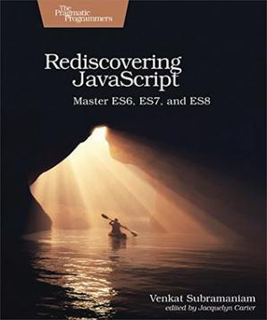

Rediscovering JavaScript: Master ES6, ES7, and ES8

JavaScript is no longer to be feared or loathed - the world's most popular and ubiquitous language has evolved into a respectable language. Whether you're writing frontend applications or server side code, the phenomenal features from ES6 and beyond - like the rest operator, generators, destructuring, object literals, arrow functions, modern classes, promises, async, and metaprogramming capabilities - will get you excited and eager to program with JavaScript. You've found the right book to get started quickly and dive deep into the essence of modern JavaScript. Learn practical tips to apply the elegant parts of the language and the gotchas to avoid.
JavaScript is a black swan that no one, including the author of the language, thought would become a popular and ubiquitous language. Not long ago, it was the most hated and feared language you could use to program the web. JavaScript ES6 and beyond has gone through a significant makeover. Troublesome features have been replaced with better, elegant, more reliable alternatives. This book includes many practical examples and exercises to help you learn in depth. It will not bore you with idiosyncrasies and arcane details intended for bad interview questions. Instead, it takes you into key features that you can readily use in your day-to-day projects.
Whether you program the frontend or the server side, you can now write concise, elegant, and expressive JavaScript with newer features like default parameters, template literals, rest and spread operators, destructuring, arrow functions, and generators. Take it up a notch with features like infinite series, promises, async, and metaprogramming to create flexible, powerful, and extensible libraries. While the evolved features of the language will draw you in, the hundreds of examples in this book will pin the concepts down, for you to use on your projects. Take command of modern JavaScript and unlock your potential to create powerful applications.
What You Need:
- To try out the examples in the book you will need a computer with Node.js, a text editor, and a browser like Chrome installed in it.